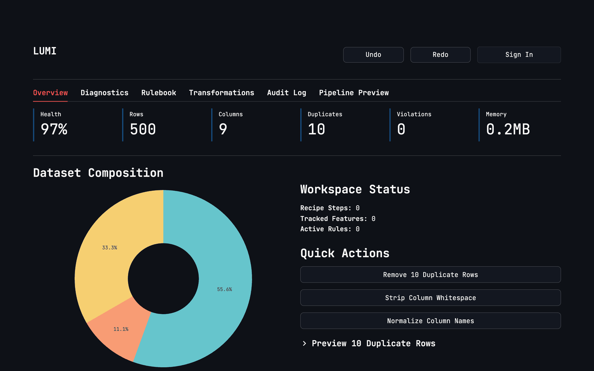
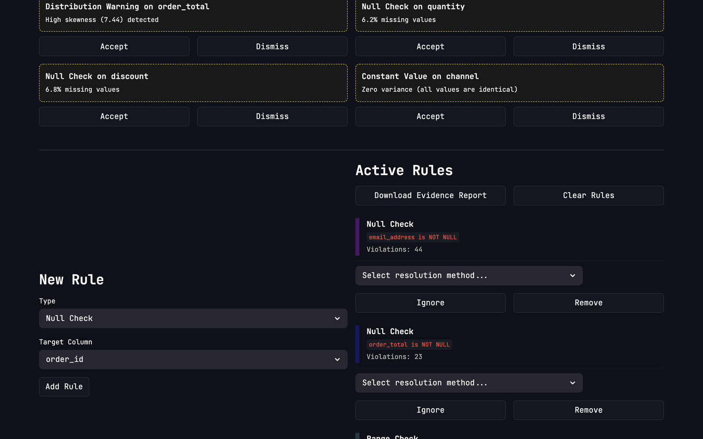

Clean a messy CSV and keep the Python that did it.
Upload a CSV or Excel file. Lumi flags quality problems, you decide what to do about them with rules and cleaning steps, and you download the cleaned data with a Python script that runs the same steps.
Free · Open source · No sign-up needed · CSV and XLSX up to 50 MB

How it works
-
Upload a file
A CSV or XLSX, up to 50 MB. You don't need an account.
-
Review the proposals
Scout checks the file for nulls, duplicates, outliers, mixed types and more. Accept what you want and dismiss the rest.
-
Set rules and clean
Add rules, choose how violations get resolved, and apply any of the 17 transforms. Each step goes in the Audit Log.
-
Export
Download the cleaned data, plus a script or notebook that runs the same steps outside Lumi.
Inside the workspace
These are screenshots from the app, cropped to fit.
Scout
It reads the file before you do
Scout lists what it finds as proposals, naming the column and the number. Accept one and it becomes a rule or a cleaning step. Dismiss it and it goes away.
- Duplicate rows
- All-empty rows
- Duplicate column names
- Non-snake_case headers
- Nulls
- Redundant columns (over 90% empty)
- Constant values
- IQR outliers
- Skew
- Mixed types
- High cardinality
- Leading and trailing whitespace

Rulebook
Rules with a count next to them
Five rule types: Null Check, Range Check, Relational Check, Custom Expression and Informational. Each active rule shows its violation count, and you choose how to resolve it.
- Null violations
- Drop Rows, Fill with Mean, Fill with Median, KNN Imputer, Iterative Imputer
- Range violations
- Drop Rows, Cap at Bounds, Log Transform
- Evidence report
- Download a Markdown report from the Rulebook.
Audit Log
Every step, with what it did to the row count
Steps are numbered and show health % and row count. In this log, drop_duplicates took the file from 500 rows to 490. Remove any step, or use undo and redo.

What you get out
The script has two functions. clean_data() applies your steps, and validate_data() returns violation counts.
def clean_data(df):
# Match the dtypes Lumi uses after upload (numeric downcasting) so results agree with the app.
df = _downcast_dtypes(df)
# Remove duplicate rows from the DataFrame.
df = df.drop_duplicates()
try:
# Strip whitespace from the text cells of all object/string columns (nulls and non-text values untouched).
for c in df.select_dtypes(include=['object', 'string']).columns:
df[c] = _apply_to_str(df[c], lambda x: x.str.strip())
except Exception as e:
warnings.warn("Skipped strip_whitespace on 'All': " + str(e))The start of clean_data(), generated for the audit log above.
- Cleaned CSV
- The dataset with your steps applied.
- Cleaned Excel
- The same data as an Excel file.
- clean_data.py
- The Python script, with clean_data() and validate_data().
- clean_data.ipynb
- The same pipeline as a Jupyter notebook.

Good to know
- Upload limit
- 50 MB per file.
- Sampling
- Files over 10,000 rows are analysed on a random 10,000-row sample.
- Full-file download
- You can still download the whole file cleaned. Lumi replays your recipe on it.
- Processing
- Your file is uploaded and processed on the server. Check your data policy before uploading anything sensitive.
- Sign-in
- Optional. You can use Lumi without an account.
- License
- Open source under AGPL v3.
Try it on a file you're working on now.
Free, open source, and no sign-up needed.